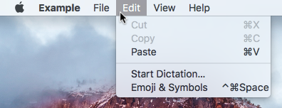

MenuSeparator QML Type
A native menu separator. More...
| Import Statement: | import Qt.labs.platform 1.1 |
| Since: | Qt 5.8 |
| Inherits: |
Detailed Description
The MenuSeparator type is provided for convenience. It is a MenuItem that has the separator property set to true by default.

Note: Types in Qt.labs modules are not guaranteed to remain compatible in future versions.